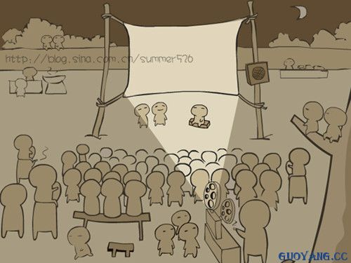
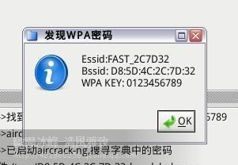

输出
普通的输出
生活中的“输出”

软件中的“输出”

python中变量的输出
# 打印提示
print('hello world')
print('给我的卡---印度语，你好的意思')
格式化输出
<1>格式化操作的目的
比如有以下代码:
pirnt("我今年10岁")
pirnt("我今年11岁")
pirnt("我今年12岁")
...
想一想:
在输出年龄的时候，用了多次"我今年xx岁"，能否简化一下程序呢？？？
答:
字符串格式化
<2>什么是格式化
看如下代码:
pirnt("我今年10岁")
pirnt("我今年11岁")
pirnt("我今年12岁")
...
在程序中，看到了%这样的操作符，这就是Python中格式化输出。
age = 18
name = "xiaohua"
print("我的姓名是%s,年龄是%d"%(name,age))
<3>常用的格式符号
下面是完整的，它可以与％符号使用列表:
| 格式符号 | 转换 |
|---|---|
| %c | 字符 |
| %s | 通过str() 字符串转换来格式化 |
| %i | 有符号十进制整数 |
| %d | 有符号十进制整数 |
| %u | 无符号十进制整数 |
| %o | 八进制整数 |
| %x | 十六进制整数（小写字母） |
| %X | 十六进制整数（大写字母） |
| %e | 索引符号（小写'e'） |
| %E | 索引符号（大写“E”） |
| %f | 浮点实数 |
| %g | ％f和％e 的简写 |
| %G | ％f和％E的简写 |
换行输出
在输出的时候，如果有\n那么，此时\n后的内容会在另外一行显示
print("1234567890-------") # 会在一行显示
print("1234567890\n-------") # 一行显示1234567890，另外一行显示-------
练一练
- 编写代码完成以下名片的显示
==================================
姓名: dongGe
QQ:xxxxxxx
手机号:131xxxxxx
公司地址:北京市xxxx
==================================
输入
python2版本中
咱们在银行ATM机器前取钱时，肯定需要输入密码，对不？
那么怎样才能让程序知道咱们刚刚输入的是什么呢？？
大家应该知道了，如果要完成ATM机取钱这件事情，需要先从键盘中输入一个数据，然后用一个变量来保存，是不是很好理解啊
raw_input()
在Python中，获取键盘输入的数据的方法是采用 raw_input 函数（至于什么是函数，咱们以后的章节中讲解），那么这个 raw_input 怎么用呢?
看如下示例:
password = raw_input("请输入密码:")
print '您刚刚输入的密码是:', password
运行结果:
请输入密码:123456
您刚刚输入的密码是:123456
注意:
- raw_input()的小括号中放入的是，提示信息，用来在获取数据之前给用户的一个简单提示
- raw_input()在从键盘获取了数据以后，会存放到等号右边的变量中
- raw_input()会把用户输入的任何值都作为字符串来对待
input()
input()函数与raw_input()类似，但其接受的输入必须是表达式。
>>> a = input()
123
>>> a
123
>>> type(a)
<type 'int'>
>>> a = input()
abc
Traceback (most recent call last):
File "<stdin>", line 1, in <module>
File "<string>", line 1, in <module>
NameError: name 'abc' is not defined
>>> a = input()
"abc"
>>> a
'abc'
>>> type(a)
<type 'str'>
>>> a = input()
1+3
>>> a
4
>>> a = input()
"abc"+"def"
>>> a
'abcdef'
>>> value = 100
>>> a = input()
value
>>> a
100
input()接受表达式输入，并把表达式的结果赋值给等号左边的变量
python3版本中
没有raw_input()函数，只有input()
并且 python3中的input与python2中的raw_input()功能一样